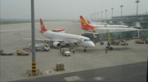

云南之旅
#1 云南之旅 作者：蓝天蓝 发表时间：2011-6-28 20:14:02
云南之旅
去云南旅游了6天，行程非常紧张，但是还是抽时间记录了一下一路的所见所闻，在这跟大家分享一下
云南之旅1 等飞机起飞
由于是第一次出远门，第一次坐飞机，在上飞机以前就显得特别紧张，我们要从天津做飞机，旅行社的人就负责开车把我们送到天津机场。中午12:20我们就坐上了开往天津机场的汽车，我本来坐车就有点晕车，所以一上车就想睡觉，迷迷糊糊的就睡着了，不一会就被老公叫醒了，跟我说路边的风景，我起来一看，果然不错，睡意也没有了，头也不晕了，我们就一边聊天一边欣赏窗外的美景。
到达天津机场，已经14:20了，我们就去办理了登机手续，就是准备登机了，可惜一看我们的登机时间是17:10，现在才15:30，还有很长一段时间呢，我们只好在机场闲逛.
毕竟是第一次出远门，心情不免有些紧张，东西刚刚放下，就不知道放到哪里了，在休息的时候，想看看时间，我就怎么也找不到手机了，其实我是把手机放到裤兜里面了，就一直以为放到背包里面了，就在背包里面找，结果自然是找不到了，后来想想到是发在裤兜里面了。还有我买了一个小本子，准备记一些东西，其中我们到的昆明，接机人的电话就写在了这个本子上面， 开始是发在小手提包里面的，拿出来看的时候就没有在放回去，直接放到背包里面了，想在看的时候，就忘了发在哪里，还以为在办理登记手续的时候丢了呢，就让老公去找，我也开始在手提包和背包里面找，最后在背包里面找到了，就让老公回来了。对自己真的有点无语了.......
离登机时间还早，就顺便照了几张照片，（哎，由于相机内存太少，以至于后来照得照片太多，就只能把前面照得照片删除了，就留下几张机场照片

时间一分一秒的过去了，到16:25的时候，却被告知，飞机不能准点到达了，起飞时间推迟到18:35了，哎，还要再等2个多小时，这个时候，感觉时间过得好漫长。
在飞机场等飞机起飞的时候，听到的最多的一句话就是：我们非常抱歉的通知你，你乘坐的XX飞机延迟了，将于XX点XX分起飞。
17:52分了，本来是在29号登机口登机的，结果告知这里飞机不能降落，临时改在21号登机口登机了，大家就拿着行李赶到21号登机口等候。
18:23的时候，开始了登机.......
续：
#2 Re:云南之旅1 等飞机起飞 作者：被感动的人 发表时间：2011-6-28 21:49:02
看这样的文章觉得心情好~
#3 Re:Re:云南之旅1 等飞机起飞 作者：蓝天蓝 发表时间：2011-6-29 7:52:40
引用：
原文由 被感动的人 发表于 2011-6-28 21:49:02 :看这样的文章觉得心情好~
只是随笔写了当时的感受
#4 Re:云南之旅1 等飞机起飞 作者：掌棋如烟 发表时间：2011-7-7 12:41:35
谢谢楼主给我以后的旅游之行提供了参考依据, 天气我喜欢不冷不热的时候,游客人少非旺季最好,你认为几月去云南最好? 是参团还是自由行好? 房价贵么? 参团多少钱啊,行程安排合理么,感觉值么?
#5 Re:Re:云南之旅1 等飞机起飞 作者：蓝天蓝 发表时间：2011-7-7 13:44:54
引用：从气候来看一年四季去云南旅游都是不错的选择，但是最好的选择还是春节也就是3月份到4月份，还有就是秋冬季节也就是10月到次年的2月。下面在说说淡季和旺季的差别。
原文由 掌棋如烟 发表于 2011-7-7 12:41:35 :谢谢楼主给我以后的旅游之行提供了参考依据, 天气我喜欢不冷不热的时候,游客人少非旺季最好,你认为几月去云南最好? 是参团还是自由行好? 房价贵么? 参团多少钱啊,行程安排合理么,感觉值么?
云南一年中基本上是没有淡季的，所谓淡季只是相对来说，每年的5月到9月还有12月以后是云南旅游的淡季，5月到9月是夏季而云南处在热带可以想象一下这是后去旅游是什么样子，12月以后虽然不热了但也错过了云南景色最好的时候。所以说每年的十一月末是去云南旅游的最佳时间因为那时候景色依旧，但以错过了云南旅游的高峰期，各方面价格都有所回落。人也没有十月份那么多。选择这个时候去云南旅游是性价比最高的。
参团比较方便，团费也不贵，可以去当地旅行社商量团费的，如果时间 充裕，还可以等特价票，什么时候有特价票什么时候去，待遇是一样的。一路上还可以听导演介绍当地习俗什么的，不过导演说的夜不能尽信，这个要自己把握了，比自己去什么都不知道要好。自由行不合适，云南房价比咱们这里贵多了。行程安排还算合理，跟团去还是值得滴。多少也有自己自由活动的时候。
［ 掌棋如烟 于 2011-7-7 19:57:07 时花20金币送鲜花一朵］
#6 Re:云南之旅1 等飞机起飞 作者：掌棋如烟 发表时间：2011-7-7 20:02:35
感谢蓝的耐心回答,看到你的头像我就好纠结,我家缸里那两棵睡莲只长叶不长花,不过在怀孕期间侍弄花草心情还是很明媚的［ 蓝天蓝 于 2011-7-7 20:06:10 时花20金币送鲜花一朵］
#7 Re:云南之旅1 等飞机起飞 作者：掌棋如烟 发表时间：2011-7-10 12:40:47
岁月浮沉,旖旎斑斓,那些本以为早已匿迹于苍桑往事中永不复现的往事，如今也在飞机的轰鸣声中纷至沓来,却无论悲喜都令人珍藏.
你的旅程 我的向往,收集一路阳光,在新奇而又陌生的风景中萌生出一些小感慨,细密绵长的感情如若发丝被牵扯出来,有没有一张照片,成为记忆的书签,封存在那一天,那一瞬间,那一抹上翘的嘴角.
人群中互相张望,转眼又分道扬镳,离别是锋芒毕露的造化,让人猝不及防,直到寂寞发霉,直到重新启程.
［ 被感动的人 于 2011-7-11 14:25:20 时花20金币送鲜花一朵］
［ 蓝天蓝 于 2011-7-11 15:58:59 时花20金币送鲜花一朵］